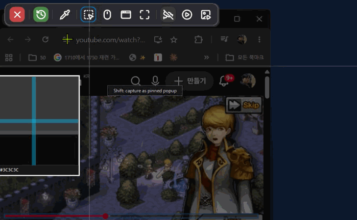
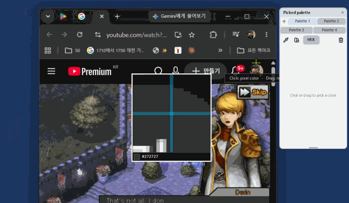
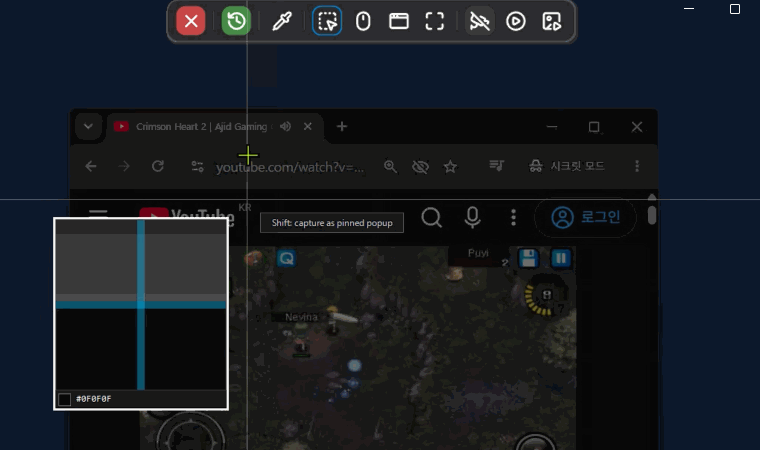
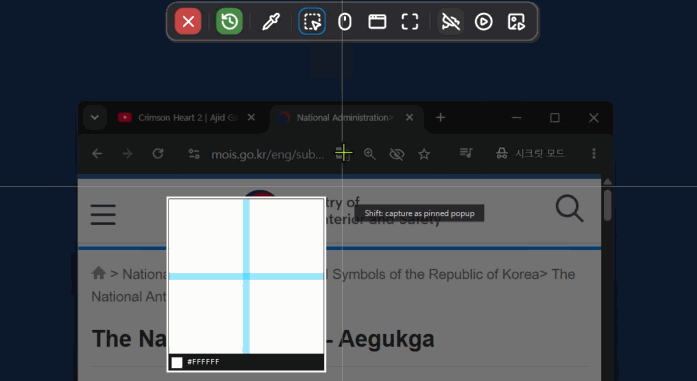
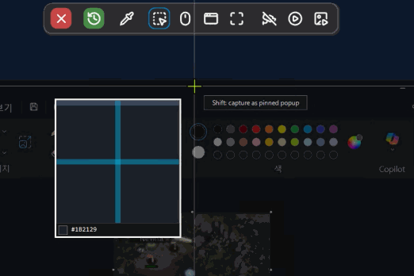
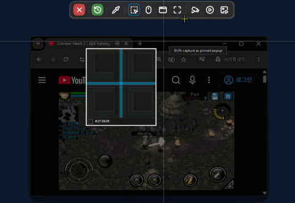
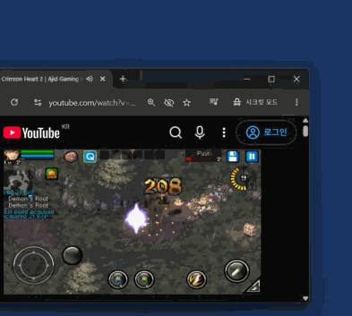
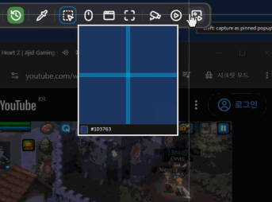

MultiCapture
A portable capture & recording tool that lives in your tray — one PrintScreen to grab a region, window, or monitor, or roll a dashcam-style screen recording.
Element-level window capture, a non-destructive editor, and screen recording to MP4 or animated GIF — all fully portable, with settings and captures kept next to the exe.

Eyedropper & Palette
Pick any color on screen and keep it.
Eyedropper & Palette
Pick any color on screen into the palette, or drag a region to add its average color. Switch any color between RGB and HEX.

Palette Extraction
Drag a region and extract its color table at the interval you choose, then add every swatch to your palette in one click.

- Screen eyedropperPick once or continuously, with a magnifier and HEX readout. The color is copied as
#RRGGBB. - Persistent paletteA tabbed palette window with drag-to-reorder and per-color locking.
Screen Capture
One hotkey, every way to grab the screen.
Region Capture
Drag to select any area and capture it exactly, with a live size readout and magnifier. Every capture is kept in the History window.

Scroll Capture
Captures a long page or document by scrolling and stitching it into a single seamless PNG automatically.

Window Capture
Hover over any window or UI element to highlight it, then click to capture exactly that element in one shot.

- 4 capture modesRegion, full screen, active window, or per monitor.
- Global hotkey
PrintScreenorCtrl+PrintScreen, system-wide. - Capture overlayFrozen screen, hover to pick a window or monitor, crosshair guides with a pixel-accurate magnifier (zoom, HEX),
Escto cancel. - Pin to ScreenFloat any capture always on top. Wheel to resize,
Ctrl+wheel for opacity, double-click to collapse. - Clipboard auto-copyEvery capture is copied by default, with a PNG saved alongside.
History & Editor
Every shot is kept, and every edit is reversible.
- Newest-first historyThumbnail panel. Lock any capture to prevent accidental deletion.
- Non-destructive editorThe original is preserved; edits are stored and restored separately.
- Annotation toolsPen, shapes, mosaic, re-editable text, number stamps (①–⑮), semi-transparent fill.
- Curved arrowsThe arrow follows the path you actually dragged.
- Style paletteSave stroke, fill, width, and dash as a swatch, then apply all four in one click.
- Selection toolCopy a region of the image and paste it elsewhere on the canvas.
- Multi-select
Ctrl+clickto select several, nudge with arrow keys (1px,Shiftfor 10px), then move, resize, copy/paste, or delete together. - ComfortAuto-fit zoom, dark/light theme, and a settings button in the history window.
Screen Recording
MP4, animated GIF, or a dashcam that records the past.
Region Recording
Drag out any area and record it to MP4 with no length limit. Pause and resume anytime, and move the frame mid-take while it still saves as one file.

Dashcam
Always recording in the background, like a car black box. Missed the moment? Pick how far back to go, preview the start frame, and export just that clip.

AniGif
Record any part of your screen straight to an animated GIF. Before it saves, an edit popup lets you trim the length by hand with a live preview.

- Region recordingRecord to MP4 with no length limit. Stop from the floating bar, tray menu, or capture hotkey.
- Reposition mid-takeDrag the frame's corner handles and the video pans along, still saved as one file.
- Audio & cursorSystem sound and microphone in one track, plus optional mouse-cursor compositing.
- Floating control barElapsed time and pause/resume, kept out of the recorded area.
Other
Portable by design.
- LocalizationSwitch between English and Korean.
- SettingsSave folder, hotkey, default mode, auto-start, and dark/light theme with live preview.
- Portable safeguardsRefuses to start from inside a ZIP or a folder it can't write to, so settings and captures never end up in a temp folder.
- Editor-tool support gatePreview / lock & unlock.
- Quiet notificationsToasts that never steal focus.
All Version List
Every release, newest first.
| Version | What's New | Download |
|---|---|---|
| Ver.2026.09.19Latest | Scroll capture stitches a tall page or document into one long PNG automatically, and Pin to Screen turns any capture into an always-on-top floating window with adjustable size and opacity. The eyedropper now feeds a persistent, tabbed color palette window with a continuous picking mode, plus a new palette extraction tool that reduces a screen region to a handful of representative swatches. The editor gained a selection tool for copy/paste, and history items can now be locked to prevent accidental deletion. | Download |
| Ver.2026.08.30 | Light mode - a Dark/Light theme switch in Settings, previewed live as you pick it and reverted if you cancel. Applies across the history window, annotation editor, and GIF trim window, while the capture overlay itself stays dark for clarity against your screen. Multi-select annotations - Ctrl+click any shape to add it to a multi-selection regardless of type, then nudge everything with the arrow keys (1px, or 10px with Shift). Dashcam audio is now far more reliable when a device is slow to open or the default output changes mid-recording, and the GIF trim window's playhead line no longer disappears behind the handles. | Download |
| Ver.2026.08.22 | AniGif (GIF recording) - record any part of your screen straight to an animated GIF. Paste it into an issue tracker, chat, or a doc and it plays by itself, where an MP4 only shows a thumbnail. Frame rate, scale, and color count are configurable, and recording auto-saves at 60 seconds or 25 MB so the file stays shareable. Before it saves, a trim window opens - drag either handle and the preview follows the cut point live, so you can cut the dead air off both ends without playing it back. Microphone recording - capture your voice together with system sound, with a status box on the region overlay so you never record it by accident. Arrows now curve along the path you actually dragged, the eyedropper copies the picked color to the clipboard as #RRGGBB, and the history window opens noticeably faster. | Download |
| Ver.2026.08.08 | Screen recording - record any part of your screen to an MP4. Pick [Record] on the capture toolbar, drag out the area you want, and it records until you stop it from the floating bar, the tray menu, or your capture hotkey. The floating bar shows elapsed time with pause/resume and stays out of the recorded area, and you can drag the frame's corner handles to reposition mid-take - the video pans along with it and still saves as one file. No length limit, with system audio and the mouse cursor included. Style palette & color picker - snapshot your current stroke color, fill (alpha included), width, and dash pattern as a swatch, then click it to apply all four at once. Grab any color straight off the screen with the new eyedropper, complete with a magnifier and HEX readout. The Line tool is now Arrow, drawing a dot and arrowhead by default, and any object can be duplicated with Ctrl+C / Ctrl+V. | Download |
| Ver.2026.07.25 | Bézier curve annotations - draw a line, then drag its tangent handles to shape it into a smooth cubic Bézier curve, and cycle endpoint decorations (arrowhead, dot) for precise callouts. Pens, shapes, mosaics, and text now share one editing model - select, move, resize, or delete any of them with the same handle-based controls. Dashcam clip preview - the dashcam continuously records your screen in the background, so you can save the last few seconds as a video after the moment has passed. Drag the length slider to preview the exact start frame as a live thumbnail, trim down to 1-second precision, and export high-resolution clips up to ~20× faster with GPU-accelerated decoding. | Download |
| Ver.2026.07.14 | Element-level window capture (UIA) - when capturing a window, drill down to individual UI elements (buttons, panels, toolbars, and more) instead of grabbing the whole window. Hover to highlight the element under the cursor and refine the selection Firefox-style for pixel-precise capture. Redesigned editor toolbar - reorder tool groups by dragging, switch to an icon-only compact view, and collapse the toolbar when you need more room. The history window now remembers its size between sessions. | Download |
| Ver.2026.06.23 | Initial release - a portable tray tool that captures a region, full screen, active window, or monitor with a single PrintScreen. Includes save-to-folder, clipboard copy, thumbnail history, and image editing. | Download |
Environment: Windows · .NET Framework 4.8 · zero external dependencies